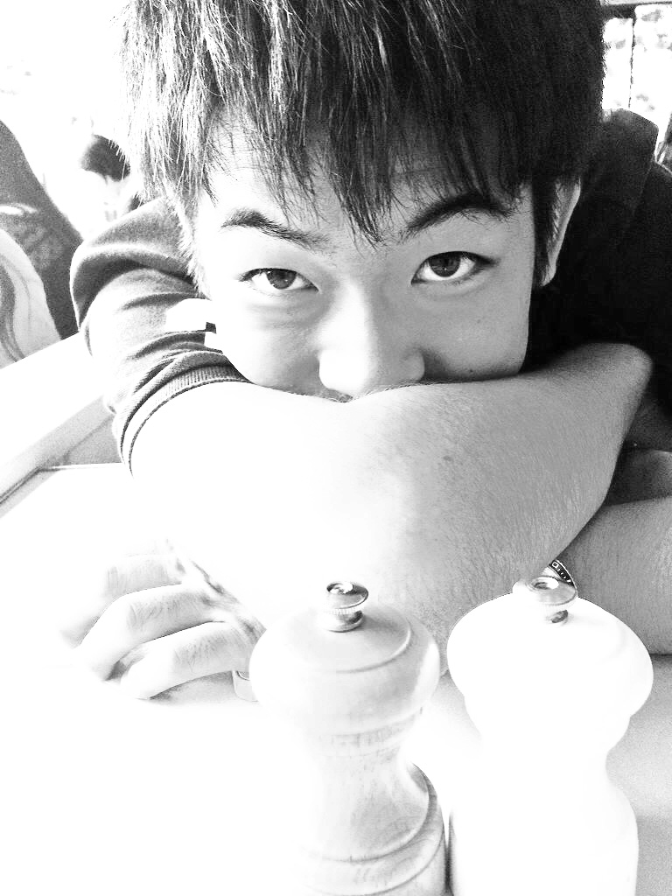

Atsushi Yokoi
I was born in August 6th 1995. I lived in yokohama,nagoya,KY,MI and Shonan. Now I live in Tsukishima. I'm a sophmore at The University of Tokyo. My hobby is playing soccer, listening to music and taking pictures.
pictures
graffiti and nature